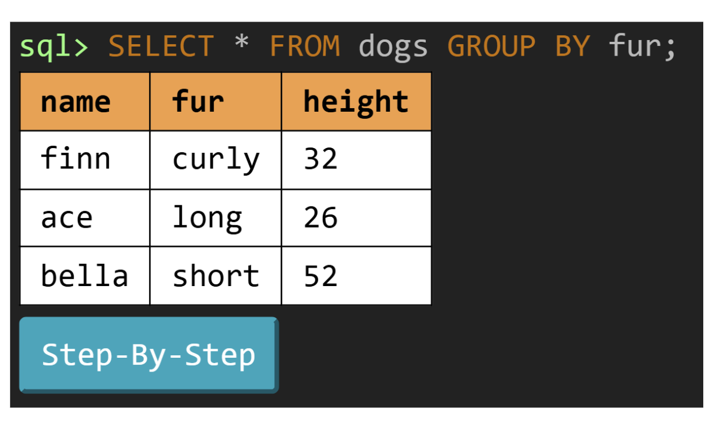
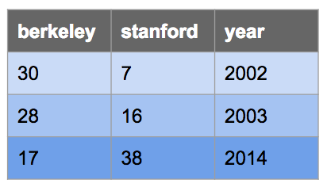

讨论课 11：SQL
可视化 SQL
AHUT_1A SQL 网页解释器是可视化和调试 SQL 语句的绝佳工具！
要开始使用，请访问 code.cs61a.org，然后在启动界面上点击 Start SQL interpreter。
作业中用到的多数表都已经可以直接使用，所以让我们试着执行一条 SELECT 语句：

除了显示输出表的可视化表示之外，「Step-by-step」按钮还能让我们逐步执行 SQL，并把其中发生的每一次变换可视化。在我们的例子里，点击下一个箭头会出现下面的可视化效果，展示 SQL 究竟是如何把我们的行分组形成最终输出的！

SQL 基础
示例表
下面例子中用到的表叫做 big_game，它记录了每年 Big Game 的比分。这张表有三列：berkeley、stanford 和 year。

CREATE TABLE big_game (
berkeley INTEGER, stanford INTEGER, year INTEGER);
INSERT INTO big_game (berkeley, stanford, year) VALUES
(30, 7, 2002),
(28, 16, 2003),
(17, 38, 2014);你可以在 sqlite 中这样查看它：
sqlite> .mode column
sqlite> SELECT * FROM big_game;
berkeley stanford year
-------- -------- ----
30 7 2002
28 16 2003
17 38 2014.mode column 命令，也没关系，忽略它即可。
从表中查询
通常，我们会用 SELECT 语句从已有的表创建一张新表：
SELECT [columns] FROM [tables] WHERE [condition] ORDER BY [columns] LIMIT [limit];让我们拆解一下这条语句：
SELECT [columns]告诉 SQL 我们希望在输出表中包含给定的列；[columns]是用逗号分隔的列名列表，用*可以选择所有列FROM [table]告诉 SQL 我们要选择的列来自给定的表WHERE [condition]对输出表进行筛选，只保留值满足给定[condition]的行，[condition] 是一个布尔表达式ORDER BY [columns]按照给定的逗号分隔的列列表对输出表中的行排序；默认情况下值按升序（ASC）排列，但你可以用 DESC 按降序排列LIMIT [limit]用整数[limit]限制输出表中的行数
下面是一些例子：
从 big_game 表中选出 Berkeley 的所有比分，但只包含 2002 年之后的年份的比分：
sqlite> SELECT berkeley FROM big_game WHERE year > 2002;
28
17选出 Berkeley 获胜的那些年份里两所学校的比分：
sqlite> SELECT berkeley, stanford FROM big_game WHERE berkeley > stanford;
30|7
28|16选出 Stanford 得分超过 15 分的年份：
sqlite> SELECT year FROM big_game WHERE stanford > 15;
2003
2014SQL 运算符
SELECT、WHERE 和 ORDER BY 子句中的表达式可以包含以下一个或多个运算符：
- 比较运算符：
=、>、<、<=、>=、<>或!=（“不等于”） - 布尔运算符：
AND、OR - 算术运算符：
+、-、*、/ - 连接运算符：
||
输出每年 Berkeley 的得分与 Stanford 的得分的比值：
sqlite> select berkeley * 1.0 / stanford from big_game;
0.447368421052632
1.75
4.28571428571429输出两支球队得分都超过 10 分的那些年份的比分之和：
sqlite> select berkeley + stanford from big_game where berkeley > 10 and stanford > 10;
55
44输出一张只有一列一行的表，其中包含值 “hello world”：
sqlite> SELECT "hello" || " " || "world";
hello world披萨时间
pizzas 表包含伯克利各家出色披萨店的名称、开始营业时间和打烊时间。meals 表包含（大学生的）典型用餐时间。如果某个用餐时间在营业时间之内（含两端），就说这家披萨店在该用餐时间营业。
CREATE TABLE pizzas (name TEXT, open INTEGER, close INTEGER);
INSERT INTO pizzas VALUES
("Artichoke", 12, 15),
("La Val's", 11, 22),
("Sliver", 11, 20),
("Cheeseboard", 16, 23),
("Emilia's", 13, 18);
CREATE TABLE meals (meal TEXT, time INTEGER);
INSERT INTO meals VALUES
("breakfast", 11),
("lunch", 13),
("dinner", 19),
("snack", 22);Q1：早点开门
你想在 13 点（下午 1 点）之前吃披萨。创建一个 opening 表，包含所有在 13 点之前开门的披萨店的名称，按字母逆序排列。要测试你的查询输出的是哪个表，请按 61A Code 中的绿色播放按钮！
opening 表：
| name |
|---|
| Sliver |
| La Val's |
| Artichoke |
-- Pizza places that open before 1pm in alphabetical order
CREATE TABLE opening AS
SELECT name FROM pizzas WHERE open < 13 ORDER BY name DESC;
Q2：自习时间
你打算从披萨店开门的那一刻起在那里自习，一直学到 14 点（下午 2 点）。创建一个表 study，包含两列：每家披萨店的名称，以及你在那里自习的时长（即开门时间与 14 点之间的差）。对于 14 点之前不开门的披萨店，时长应为 0。按时长递减排列各行。
提示：使用形如 MAX(_, 0) 的表达式，确保结果不小于 0。
study 表：
| name | duration |
|---|---|
| La Val's | 3 |
| Sliver | 3 |
| Artichoke | 2 |
| Emilia's | 1 |
| Cheeseboard | 0 |
-- Pizza places and the duration of a study break that ends at 14 o'clock
CREATE TABLE study AS
SELECT name, MAX(14 - open, 0) AS duration FROM pizzas ORDER BY duration DESC;
Q3：深夜小食
还有什么店在小食时间还开着？创建一个表 late，只含一列，列名为 status，其中的每一句都描述一家在小食时间或之后打烊的披萨店的打烊时间。重要：不要在 SQL 查询里使用任何数字！而要用连接把每家餐厅的打烊时间与小食时间作比较。各行的顺序可以任意。
late 表：
| status |
|---|
| Cheeseboard closes at 23 |
| La Val's closes at 22 |
SQL 中的 || 运算符会把两个字符串拼接起来，就像 Python 中的 + 一样。
-- Pizza places that are open for late-night-snack time and when they close
CREATE TABLE late AS
SELECT name || " closes at " || close AS status
FROM pizzas JOIN meals
ON time <= close
WHERE meal="snack";
- 用
FROM pizzas, meals把pizzas表和meals表连接起来 - 只使用
meal为"snack"的行 - 把小食的时间与披萨店的打烊时间作比较。
name || " closes at " || close 来生成结果表中的句子。|| 运算符会把各个值拼接成字符串。
Q4：双份披萨
如果两顿饭的时间相隔超过 6 小时，那么两顿都去同一家披萨店也没什么问题，对吧？创建一个表 double，包含三列。第一列是较早的那顿饭，第二列是较晚的那顿饭，name 列是披萨店的名称。只包含描述相隔超过 6 小时的两顿饭、并且这家披萨店在两顿饭时间都营业的行。各行的顺序可以任意。
double 表：
| first | second | name |
|---|---|---|
| breakfast | dinner | La Val's |
| breakfast | dinner | Sliver |
| breakfast | snack | La Val's |
| lunch | snack | La Val's |
-- Two meals at the same place
CREATE TABLE double AS
SELECT a.meal AS first, b.meal AS second, name
FROM meals AS a
JOIN meals AS b ON b.time > a.time + 6
JOIN pizzas ON open <= a.time AND a.time <= close AND open <= b.time AND b.time <= close;
SQL 聚合
下面是另一张示例表，这次是关于航班的：
CREATE TABLE flights (
departure TEXT, arrival TEXT, price INTEGER);
INSERT INTO flights (departure, arrival, price) VALUES
('SFO', 'LAX', 97),
('SFO', 'AUH', 848),
('LAX', 'SLC', 115),
('SFO', 'PDX', 192),
('AUH', 'SEA', 932),
('SLC', 'PDX', 79),
('SFO', 'LAS', 40),
('SLC', 'LAX', 117),
('SEA', 'PDX', 32),
('SLC', 'SEA', 42),
('SFO', 'SLC', 97),
('LAS', 'SLC', 50),
('LAX', 'PDX', 89);应用 聚合函数（例如 MAX(column)）会把多行的值合并成一行输出。
默认情况下，我们合并表中所有行的值。例如，如果我们想统计 flights 表中的行数，可以这样写：
sqlite> SELECT COUNT(*) from FLIGHTS;
13如果我们想把相似的行归为一组，并在这些组内进行聚合运算，该怎么办呢？这时我们使用 GROUP BY 子句。
再看一个例子。对于每个不同的出发地，把出发机场相同的所有行归为一组。然后选出 price 列并应用 MIN 聚合，得到该组中最便宜的出发航班的价格。最终结果是一张包含出发机场和最便宜出发航班的表。
sqlite> SELECT departure, MIN(price) FROM flights GROUP BY departure;
departure MIN(price)
--------- ----------
AUH 932
LAS 50
LAX 89
SEA 32
SFO 40
SLC 42就像我们可以用 WHERE 筛选行一样，我们也可以用 HAVING 筛选组。通常 HAVING 子句中应该使用聚合函数。假设我们想查看所有至少有两次出发的机场：
sqlite> SELECT departure FROM flights GROUP BY departure HAVING COUNT(*) >= 2;
departure
---------
LAX
SFO
SLC注意 COUNT(*) 聚合只是统计每个组中的行数。假设我们要统计不同机场的数量，那么可以使用下面这个查询：
sqlite> SELECT COUNT(DISTINCT departure) AS destinations FROM flights;
destinations
------------
6这会列出 flights 表中所有不同的出发机场（在这个例子里是：SFO、LAX、AUH、SLC、SEA 和 LAS）。
房间
出自 2023 年春季学期期末考试。
finals 表有 hall（字符串）和 course（字符串）两列，每一行对应某门课程举行期末考试的讲堂。
sizes 表有 room（字符串）和 seats（数字）两列，校园里每个不同的房间占一行，包含该房间的座位数。所有讲堂都是房间。
Q5：总座位数
创建一个表，包含 course（字符串）和 total（数字）两列，为每门至少使用两个房间举行期末考试的课程生成一行。每一行包含课程名称，以及该课程所有期末考场的座位总数。
对于可能出现在 finals 和 sizes 表中的任何数据，你的查询都应当正确，但对于上面的示例数据，结果应当是：
61A|2400
61B|1700
61C|1200CREATE TABLE finals AS
SELECT "RSF" AS hall, "61A" as course UNION
SELECT "Wheeler" , "61A" UNION
SELECT "Pimentel" , "61A" UNION
SELECT "Li Ka Shing", "61A" UNION
SELECT "RSF" , "61B" UNION
SELECT "Wheeler" , "61B" UNION
SELECT "Morgan" , "61B" UNION
SELECT "Wheeler" , "61C" UNION
SELECT "Pimentel" , "61C" UNION
SELECT "Soda 306" , "10" UNION
SELECT "RSF" , "70";
CREATE TABLE sizes AS
SELECT "RSF" AS room, 900 as seats UNION
SELECT "Wheeler" , 700 UNION
SELECT "Pimentel" , 500 UNION
SELECT "Li Ka Shing", 300 UNION
SELECT "Morgan" , 100 UNION
SELECT "Soda 306" , 80 UNION
SELECT "Soda 310" , 40 UNION
SELECT "Soda 320" , 30;
SELECT course, SUM(seats) AS total
FROM finals JOIN sizes ON hall=room
GROUP BY course HAVING COUNT(*) > 1;
把 finals 表和 sizes 表连接起来，但要确保每个连接后的行都是一致的，方法是只保留 hall（来自 finals）和 room（来自 sizes）取值相同的行。
由于输出中每门课程只有一行，而同一门课程会出现在 finals 表的多行中，所以要按 course 分组。
COUNT(*) 的求值结果是某个分组中输入行的数量，在这里就是某门课程使用的房间数。
表达式 SUM(seats) 的求值结果是某个分组中（来自 sizes 表的）seats 值之和。如果每门课程一个分组，那么这就是该课程所使用的所有讲堂的座位总数。
Q6：共用房间
写一条 select 语句，创建一个表，包含 course（字符串）和 shared（数字）两列，为每门至少使用了一个也被其他课程使用的房间的课程生成一行。每一行包含课程名称，以及该课程中被其他课程也使用的房间总数。
COUNT(DISTINCT x) 的求值结果是某个分组中 x 列上出现的不同值的个数。例如，SELECT COUNT(DISTINCT seats) from sizes; 会输出 8，因为 sizes 中有 9 行，但有两行的 seats 都是 300，所以只有 8 个不同的值。
对于可能出现在 finals 和 sizes 表中的任何数据，你的查询都应当正确，但对于下面的示例，结果应当是：
61A|3
61B|2
61C|2
70|1讨论时间：谈谈为什么输出表里是这些内容。61B 共用的两个讲堂是哪两个？
你的答案CREATE TABLE finals AS
SELECT "RSF" AS hall, "61A" as course UNION
SELECT "Wheeler" , "61A" UNION
SELECT "Pimentel" , "61A" UNION
SELECT "Li Ka Shing", "61A" UNION
SELECT "RSF" , "61B" UNION
SELECT "Wheeler" , "61B" UNION
SELECT "Morgan" , "61B" UNION
SELECT "Wheeler" , "61C" UNION
SELECT "Pimentel" , "61C" UNION
SELECT "Soda 306" , "10" UNION
SELECT "RSF" , "70";
CREATE TABLE sizes AS
SELECT "RSF" AS room, 900 as seats UNION
SELECT "Wheeler" , 700 UNION
SELECT "Pimentel" , 500 UNION
SELECT "Li Ka Shing", 300 UNION
SELECT "Morgan" , 100 UNION
SELECT "Soda 306" , 80 UNION
SELECT "Soda 310" , 40 UNION
SELECT "Soda 320" , 30;
SELECT a.course, COUNT(DISTINCT a.hall) AS shared
FROM finals AS a JOIN finals AS b
ON a.hall = b.hall AND a.course != b.course
GROUP BY a.course;
把 finals 与自身连接，但要确保连接后的行属于不同的课程且使用同一个讲堂。
按第一个 course 列分组，使每门课程成为一个分组（也就是输出中的一行）。如果 WHERE 子句已经把输入行限制为使用同一讲堂的两门不同课程，就不需要 HAVING 子句。
统计某门课程中不同 hall 值的个数：COUNT(DISTINCT ___)。需要 DISTINCT 限制，这样被两门以上课程使用的讲堂才不会重复计数。